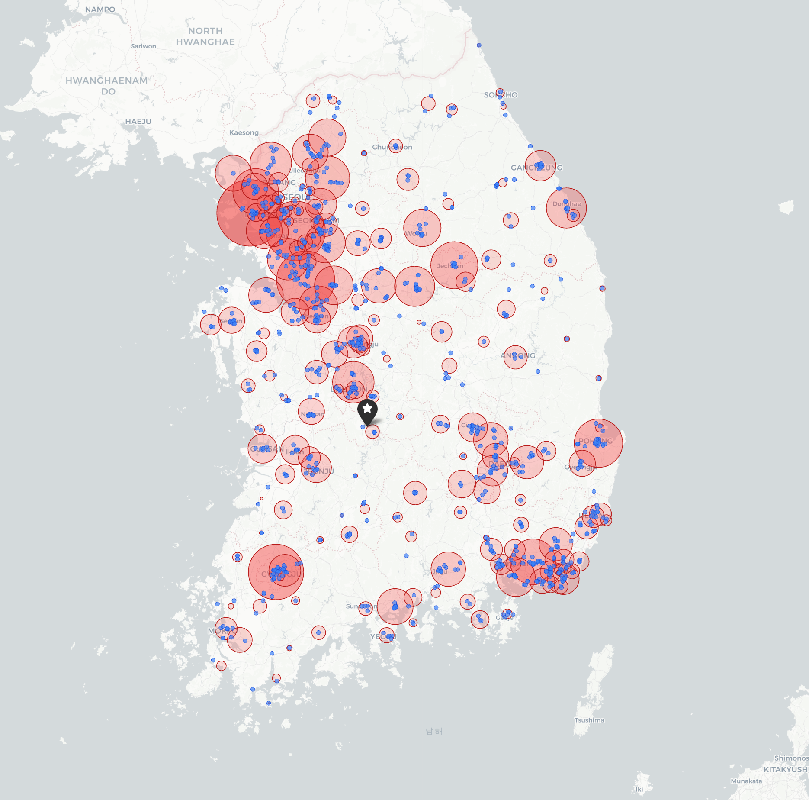

본 시뮬레이션은 실제 운영을 그대로 재현하기보다, 배송 물량과 권역 구조를 기준으로 적절한 차량 구성 및 필요 차량 대수 수준을 검토하기 위한 기준 시뮬레이션 이다.
본 시뮬레이션 결과는 현재 운영 방식의 직접 재현이 아니라, shipment 를 해체하고 주문 단위 재배차를 기반으로 한 최적화 기준 시뮬레이션 결과 이다.
현재 운영은 shipment 가 권역 기준 묶음(운영가능한 묶음) 중심으로 운영되는 반면, 본 시뮬레이션은 shipment 재조합 및 경로 (route) 재생성을 허용하는 방식으로 수행되었기 때문에, 실제 운영 대비 더 높은 통합 효과 가 발생한다.
따라서 본 결과는 "즉시 적용 가능한 운영안" 이라기보다는, 적절한 차량 구성 및 필요 차량 규모를 확인하기 위한 참고 지표 목적으로 해석해야 한다.
업체 공유용_배송 실적_2025년 2월 11월_20260317.csv업체 공유용_배송 단가표_2025년 2월 11월__20260317.csv2025년 11월 데이터만 사용.
영향건수: 제주 2 deliveries / On-site 4 deliveries.
영향건수: 14건 모두 단일 배송 (1 shipment = 1 delivery = 1 stop).
영향건수: 310건 (shipment 16.8% / delivery 5.5%).

시·군·구별 수요량을 배송지 기준으로 표시. 원의 크기가 클수록 해당 권역의 누적 수요가 크다.
| 시·군·구 수요 요약 | |
|---|---|
| 총 시·군·구 수 | 202 |
| 총 시·도 수 | 16 |
| 총 ship-to party (배송지) | 944 |
| 총 delivery (배송 건수) | 5,309 |
| 총 shipment (차량 운행 수) | 1,524 |
| 총 타이어 수량 (본) | 67,233 |
수요 상위 10 개 시·군·구
| 순위 | 시·도 | 시·군·구 | 배송지 | 대표 배송지와의 거리 (km) | TBR 비중 (%) |
|---|---|---|---|---|---|
| 1 | 인천광역시 | 중구 | 117 | 215.6 | 100.00 |
| 2 | 경기도 | 의왕시 | 25 | 173.6 | 91.93 |
| 3 | 경기도 | 평택시 | 134 | 128.9 | 99.42 |
| 4 | 광주광역시 | 광산구 | 145 | 162.7 | 98.51 |
| 5 | 경상북도 | 포항시 남구 | 145 | 231.8 | 96.07 |
| 6 | 경상남도 | 김해시 | 135 | 220.7 | 98.11 |
| 7 | 충청북도 | 제천시 | 102 | 189.3 | 96.94 |
| 8 | 인천광역시 | 서구 | 70 | 230.2 | 98.40 |
| 9 | 경기도 | 남양주시 | 65 | 200.6 | 94.38 |
| 10 | 대전광역시 | 대덕구 | 89 | 51.1 | 97.13 |
중부 RDC는 상위 권역 모두 TBR 비중 ≥ 92 %. 인천 중구·서구, 평택, 광주 광산, 포항, 김해, 제천에 수요가 집중된다.
| 톤급 | shipment 수 | 총 운임(원) | 평균 운임 / shipment |
|---|---|---|---|
| 1T | 819 | 135,625,100 | 165,599 |
| 3.5T | 417 | 84,301,000 | 202,160 |
| 5T | 107 | 28,359,300 | 265,041 |
| 8T | 159 | 58,052,000 | 365,107 |
| 11T | 22 | 8,783,000 | 399,227 |
| 합 | 1,524 | 315,120,400 | 206,772 |
As-Is 는 1T 비중이 압도적이며, 총액에서도 1T 가 가장 큰 비중을 차지함.
고객 제공 shipment 데이터를 기반으로 배송지를 구성하고, 실제 운영 이력과 동일한 조건으로 운행 시뮬레이션을 수행하였다.
이를 통해 시뮬레이션 결과의 총 운행거리 및 추정 운임을 실제 운영 데이터와 비교하였으며, 본 검토에서 사용한 운영안 및 차량 구성 방식이 현실 운영 수준을 어느 정도 재현 가능한지 검증하였다.
실제 운영 데이터와 시뮬레이션 결과 간에는 일부 편차가 존재하나, 전체적인 거리 및 운임 수준은 유사한 경향을 보였으며, 시뮬레이션 결과를 운영 검토용 참고 지표로 활용 가능한 수준으로 판단하였다.
거리: 도로 실측, 운임: 11월 중부 배송 단가표
| 톤급 | shipment | 총 거리 (km) | 총 운임 (원) | ||||
|---|---|---|---|---|---|---|---|
| 실 운영 | 재현 | 편차 (%) | 실 운영 | 재현 | 편차 (%) | ||
| 1T | 819 | 163,140 | 164,313 | +1,173 (+0.7%) | 135,625,100 | 145,263,200 | +9,638,100 (+7.1%) |
| 3.5T | 417 | 80,650 | 81,110 | +460 (+0.6%) | 84,301,000 | 89,893,900 | +5,592,900 (+6.6%) |
| 5T | 107 | 20,280 | 21,099 | +819 (+4.0%) | 28,359,300 | 30,580,900 | +2,221,600 (+7.8%) |
| 8T | 159 | 36,610 | 44,217 | +7,607 (+20.8%) | 58,052,000 | 71,388,600 | +13,336,600 (+23.0%) |
| 11T | 22 | 5,150 | 5,515 | +365 (+7.1%) | 8,783,000 | 9,919,300 | +1,136,300 (+12.9%) |
| 합 | 1,524 | 305,830 | 316,254 | +10,424 (+3.4%) | 315,120,400 | 347,045,900 | +31,925,500 (+10.1%) |
본 검토에서는 세 가지 cost 정책 시나리오를 정의한다.
세 시나리오 모두에 공통으로 적용되는 운영 제약.
| 제약 | 내용 | 근거 |
|---|---|---|
| 서울 진입 톤급 제한 | 서울 지역은 1T / 3.5T 만 진입 허용. 5T / 8T / 11T 는 서울 ship-to 배송 불가. | 실제 운영 반영 |
| 최대 운송 거리 | 단일 route 의 총 운행 거리는 410 km 를 초과하지 않는다. | 배송 단가표 기준 (최대 거리 구간) |
| 시나리오 | 의도 | 비고 |
|---|---|---|
| 실단가 기준 | 배송 단가표 가준으로 최적 사용 유도 | 운임비가 톤급간 비용 차이를 크게 벌리지 않음. 예들들어 91~100km 구간 1T > 3.5T 전환시 약 1.3배 이지만 적재 가능량은 훨씬 커짐. 1T를 사용하지 않는 이유로 작용. |
| 3.5T/5T 유도 | 3.5T / 5T 우선 사용 유도 | 3.5T / 5T 적극 사용할 수 있도록 유도하는 시나리오. |
| 1T/3.5T 유도 | 1T / 3.5T 우선 사용 유도 | 1T / 3.5T 적극 사용할 수 있도록 유도하는 시나리오. |
| 8T/11T 유도 | 8T / 11T 우선 사용 유도 | 8T / 11T 대형차로 통합 운영을 유도하는 시나리오. 총 거리 최소화 목적. |
As-Is 1 shipment = 1 트럭 운행 (편도 + 복귀). 운영안의 1 route 와 동일한 단위.
| 톤급 | 운행횟수(routes) | 총 거리 (km) | 총 운임(원) | 평균 운임 |
|---|---|---|---|---|
| 1T | 819 | 163,140 | 135,625,100 | 165,599 |
| 3.5T | 417 | 80,650 | 84,301,000 | 202,160 |
| 5T | 107 | 20,280 | 28,359,300 | 265,041 |
| 8T | 159 | 36,610 | 58,052,000 | 365,107 |
| 11T | 22 | 5,150 | 8,783,000 | 399,227 |
| 합 | 1,524 | 305,830 | 315,120,400 | 206,772 |
실단가 기준 단가표 금액 구간 으로 산정.
| 톤급 | 운행횟수(routes) | 총 거리 (km) | 총 운임(원) | 평균 운임 |
|---|---|---|---|---|
| 1T | 33 | 5,975 | 5,456,900 | 165,360 |
| 3.5T | 140 | 34,194 | 38,629,000 | 275,921 |
| 5T | 130 | 31,892 | 44,824,800 | 344,806 |
| 8T | 192 | 48,552 | 80,602,100 | 419,802 |
| 11T | 92 | 22,851 | 40,690,200 | 442,284 |
| 합 | 587 | 143,463 | 210,203,000 | — |
| 톤급 | 운행횟수(routes) | 총 거리 (km) | 총 운임(원) | 평균 운임 |
|---|---|---|---|---|
| 1T | 18 | 1,856 | 1,970,300 | 109,461 |
| 3.5T | 168 | 44,724 | 50,475,500 | 300,449 |
| 5T | 165 | 44,659 | 61,434,400 | 372,329 |
| 8T | 192 | 44,402 | 74,066,900 | 385,765 |
| 11T | 64 | 14,624 | 26,429,500 | 412,960 |
| 합 | 607 | 150,265 | 214,376,600 | — |
| 톤급 | 운행횟수(routes) | 총 거리 (km) | 총 운임(원) | 평균 운임 |
|---|---|---|---|---|
| 1T | 331 | 76,725 | 68,209,200 | 206,070 |
| 3.5T | 164 | 50,989 | 57,995,700 | 353,632 |
| 5T | 158 | 38,865 | 54,109,100 | 342,462 |
| 8T | 173 | 36,871 | 62,412,100 | 360,763 |
| 11T | 31 | 6,389 | 11,827,300 | 381,525 |
| 합 | 857 | 209,839 | 254,553,400 | — |
| 톤급 | 운행횟수(routes) | 총 거리 (km) | 총 운임(원) | 평균 운임 |
|---|---|---|---|---|
| 1T | 7 | 910 | 868,100 | 124,014 |
| 3.5T | 41 | 7,383 | 8,319,000 | 202,902 |
| 5T | 30 | 3,794 | 6,386,500 | 212,883 |
| 8T | 239 | 69,853 | 114,957,100 | 480,992 |
| 11T | 178 | 48,588 | 86,044,600 | 483,396 |
| 합 | 495 | 130,528 | 216,575,300 | — |
톤급 순서는 모두 1T / 3.5T / 5T / 8T / 11T.
| 운영안 | 상시 차량 구성안 | Peak 차량 구성안 | 싱시 → Peak | 해석 |
|---|---|---|---|---|
| 실단가 기준 | 3 / 6 / 6 / 9 / 4 = 28대 | 10 / 8 / 8 / 9 / 4 = 39대 | 3.5T +2, 5T +2 | 현실 운임 기준 비용 최적화안 |
| 3.5T/5T 유도 | 2 / 6 / 6 / 9 / 4 = 27대 | 10 / 8 / 8 / 9 / 4 = 39대 | 1T +1, 3.5T +2, 5T +2 | 3.5T / 5T 주력 운영안 |
| 1T/3.5T 유도 | 16 / 6 / 6 / 9 / 3 = 40대 | 18 / 7 / 7 / 9 / 4 = 45대 | 1T +1, 3.5T +1, 5T +1 | 1T / 3.5T 주력 운영안 |
| 8T/11T 유도 | 1 / 3 / 2 / 12 / 8 = 26대 | 3 / 4 / 3 / 12 / 8 = 30대 | 1T +2, 3.5T +1, 5T +1 | 8T / 11T 주력 운영안 (8T 12 / 11T 8 별도 고정) |
| 운영안 | 총 routes | 총 거리(km) | 미배차 | 적재율 >100% | 평균 적재율% | 총 운임비 |
|---|---|---|---|---|---|---|
| 실단가 기준 | 587 | 143,463 | 0 | 0 | 82.0 | 210,203,000 |
| 3.5T/5T 유도 | 607 | 150,265 | 0 | 0 | 82.3 | 214,376,600 |
| 1T/3.5T 유도 | 857 | 209,839 | 0 | 1 | 85.5 | 254,553,400 |
| 8T/11T 유도 | 495 | 130,528 | 0 | 0 | 75.7 | 216,575,300 |
3 / 6 / 6 / 9 / 4 = 28대10 / 8 / 8 / 9 / 4 = 39대 (1차 35대에서 3.5T +2, 5T +2)2 / 6 / 6 / 9 / 4 = 27대10 / 8 / 8 / 9 / 4 = 39대 (1차 34대에서 1T +1, 3.5T +2, 5T +2)16 / 6 / 6 / 9 / 3 = 40대18 / 7 / 7 / 9 / 4 = 45대 (1차 42대에서 1T +1, 3.5T +1, 5T +1)1 / 3 / 2 / 12 / 8 = 26대3 / 4 / 3 / 12 / 8 = 30대 (상시 → Peak 증차: 1T +2, 3.5T +1, 5T +1)각 셀은 해당 일자의 톤급별 사용 차량 대수. 굵은 줄 은 Peak 차량 구성이 적용된 일자.
판정 기준: 해당 일자의 톤급별 사용 대수 중 한 톤급이라도 상시 차량 한도를 초과 하면 Peak 로 분류 (= 상시 fleet 만으로는 미배차가 발생했을 일자).
| date | 1T | 3.5T | 5T | 8T | 11T | total | 거리(km) | 구분 |
|---|---|---|---|---|---|---|---|---|
| 2025-11-01 | 8 | 8 | 0 | 1 | 1 | 18 | 3,450 | As-Is |
| 2025-11-03 | 22 | 15 | 6 | 4 | 4 | 51 | 9,990 | As-Is |
| 2025-11-04 | 26 | 18 | 5 | 8 | 0 | 57 | 10,950 | As-Is |
| 2025-11-05 | 28 | 28 | 5 | 8 | 1 | 70 | 13,890 | As-Is |
| 2025-11-06 | 54 | 30 | 7 | 5 | 1 | 97 | 18,900 | As-Is |
| 2025-11-07 | 49 | 18 | 5 | 5 | 1 | 78 | 15,260 | As-Is |
| 2025-11-08 | 12 | 14 | 0 | 4 | 1 | 31 | 7,030 | As-Is |
| 2025-11-10 | 34 | 21 | 5 | 4 | 0 | 64 | 12,750 | As-Is |
| 2025-11-11 | 41 | 17 | 5 | 5 | 0 | 68 | 13,370 | As-Is |
| 2025-11-12 | 48 | 12 | 5 | 11 | 1 | 77 | 15,030 | As-Is |
| 2025-11-13 | 32 | 18 | 3 | 8 | 1 | 62 | 12,830 | As-Is |
| 2025-11-14 | 42 | 15 | 3 | 9 | 0 | 69 | 13,550 | As-Is |
| 2025-11-15 | 29 | 12 | 1 | 3 | 0 | 45 | 9,310 | As-Is |
| 2025-11-17 | 38 | 12 | 2 | 6 | 0 | 58 | 11,490 | As-Is |
| 2025-11-18 | 40 | 9 | 3 | 8 | 0 | 60 | 12,390 | As-Is |
| 2025-11-19 | 25 | 13 | 3 | 5 | 0 | 46 | 9,280 | As-Is |
| 2025-11-20 | 35 | 18 | 4 | 9 | 1 | 67 | 14,050 | As-Is |
| 2025-11-21 | 34 | 22 | 7 | 6 | 0 | 69 | 13,840 | As-Is |
| 2025-11-22 | 11 | 15 | 2 | 6 | 1 | 35 | 7,770 | As-Is |
| 2025-11-24 | 27 | 12 | 6 | 5 | 3 | 53 | 10,980 | As-Is |
| 2025-11-25 | 38 | 16 | 2 | 7 | 0 | 63 | 12,690 | As-Is |
| 2025-11-26 | 23 | 16 | 6 | 11 | 2 | 58 | 11,790 | As-Is |
| 2025-11-27 | 33 | 16 | 5 | 6 | 3 | 63 | 12,420 | As-Is |
| 2025-11-28 | 36 | 17 | 10 | 6 | 1 | 70 | 13,840 | As-Is |
| 2025-11-29 | 29 | 8 | 3 | 3 | 0 | 43 | 8,230 | As-Is |
| 2025-12-01 | 25 | 16 | 4 | 4 | 0 | 49 | 10,000 | As-Is |
| 2025-12-02 | 0 | 1 | 0 | 2 | 0 | 3 | 750 | As-Is |
| 합 | 819 | 417 | 107 | 159 | 22 | 1,524 | 305,830 | — |
| date | 1T | 3.5T | 5T | 8T | 11T | total | 거리(km) | 구분 |
|---|---|---|---|---|---|---|---|---|
| 2025-11-01 | 2 | 3 | 1 | 1 | 1 | 8 | 1,883 | 상시 |
| 2025-11-03 | 1 | 4 | 6 | 8 | 4 | 23 | 5,083 | 상시 |
| 2025-11-04 | 1 | 5 | 3 | 8 | 4 | 21 | 4,541 | 상시 |
| 2025-11-05 | 1 | 6 | 6 | 9 | 4 | 26 | 6,457 | 상시 |
| 2025-11-06 | 2 | 8 | 8 | 9 | 4 | 31 | 7,199 | Peak |
| 2025-11-07 | 0 | 4 | 6 | 9 | 4 | 23 | 5,931 | 상시 |
| 2025-11-08 | 1 | 0 | 3 | 5 | 2 | 11 | 3,226 | 상시 |
| 2025-11-10 | 0 | 6 | 6 | 7 | 3 | 22 | 5,383 | 상시 |
| 2025-11-11 | 1 | 6 | 3 | 8 | 4 | 22 | 5,324 | 상시 |
| 2025-11-12 | 6 | 8 | 8 | 9 | 4 | 35 | 8,111 | Peak |
| 2025-11-13 | 1 | 5 | 4 | 8 | 4 | 22 | 5,845 | 상시 |
| 2025-11-14 | 0 | 6 | 6 | 9 | 4 | 25 | 6,791 | 상시 |
| 2025-11-15 | 0 | 5 | 6 | 4 | 0 | 15 | 3,764 | 상시 |
| 2025-11-17 | 2 | 5 | 2 | 7 | 4 | 20 | 5,199 | 상시 |
| 2025-11-18 | 1 | 6 | 3 | 7 | 4 | 21 | 5,623 | 상시 |
| 2025-11-19 | 0 | 6 | 4 | 4 | 4 | 18 | 4,877 | 상시 |
| 2025-11-20 | 2 | 7 | 8 | 9 | 4 | 30 | 6,962 | Peak |
| 2025-11-21 | 0 | 6 | 6 | 9 | 4 | 25 | 6,299 | 상시 |
| 2025-11-22 | 3 | 2 | 3 | 5 | 4 | 17 | 3,866 | 상시 |
| 2025-11-24 | 0 | 6 | 5 | 8 | 4 | 23 | 5,605 | 상시 |
| 2025-11-25 | 0 | 6 | 4 | 8 | 4 | 22 | 5,783 | 상시 |
| 2025-11-26 | 0 | 7 | 8 | 9 | 4 | 28 | 6,164 | Peak |
| 2025-11-27 | 0 | 6 | 6 | 9 | 4 | 25 | 5,951 | 상시 |
| 2025-11-28 | 8 | 8 | 8 | 9 | 4 | 37 | 8,541 | Peak |
| 2025-11-29 | 1 | 5 | 3 | 6 | 1 | 16 | 3,904 | 상시 |
| 2025-12-01 | 0 | 2 | 4 | 8 | 4 | 18 | 4,489 | 상시 |
| 2025-12-02 | 0 | 2 | 0 | 0 | 1 | 3 | 660 | 상시 |
| 합 | 33 | 140 | 130 | 192 | 92 | 587 | 143,461 | — |
| date | 1T | 3.5T | 5T | 8T | 11T | total | 거리(km) | 구분 |
|---|---|---|---|---|---|---|---|---|
| 2025-11-01 | 0 | 3 | 5 | 0 | 0 | 8 | 1,882 | 상시 |
| 2025-11-03 | 1 | 6 | 6 | 7 | 4 | 24 | 5,193 | 상시 |
| 2025-11-04 | 0 | 6 | 6 | 7 | 3 | 22 | 4,898 | 상시 |
| 2025-11-05 | 0 | 6 | 6 | 9 | 4 | 25 | 6,599 | 상시 |
| 2025-11-06 | 1 | 8 | 8 | 9 | 4 | 30 | 7,134 | Peak |
| 2025-11-07 | 0 | 6 | 6 | 9 | 3 | 24 | 6,300 | 상시 |
| 2025-11-08 | 0 | 6 | 6 | 3 | 0 | 15 | 3,927 | 상시 |
| 2025-11-10 | 0 | 6 | 6 | 8 | 2 | 22 | 5,582 | 상시 |
| 2025-11-11 | 0 | 6 | 6 | 8 | 2 | 22 | 5,698 | 상시 |
| 2025-11-12 | 5 | 8 | 8 | 9 | 4 | 34 | 8,053 | Peak |
| 2025-11-13 | 0 | 6 | 6 | 8 | 3 | 23 | 6,145 | 상시 |
| 2025-11-14 | 0 | 6 | 6 | 9 | 4 | 25 | 6,751 | 상시 |
| 2025-11-15 | 0 | 6 | 6 | 3 | 0 | 15 | 3,959 | 상시 |
| 2025-11-17 | 0 | 6 | 6 | 6 | 2 | 20 | 5,410 | 상시 |
| 2025-11-18 | 0 | 6 | 6 | 8 | 2 | 22 | 5,816 | 상시 |
| 2025-11-19 | 0 | 6 | 6 | 8 | 0 | 20 | 5,216 | 상시 |
| 2025-11-20 | 0 | 8 | 8 | 9 | 4 | 29 | 7,409 | Peak |
| 2025-11-21 | 1 | 6 | 6 | 9 | 4 | 26 | 6,619 | 상시 |
| 2025-11-22 | 0 | 6 | 6 | 7 | 0 | 19 | 4,346 | 상시 |
| 2025-11-24 | 0 | 6 | 6 | 8 | 4 | 24 | 5,701 | 상시 |
| 2025-11-25 | 0 | 6 | 6 | 9 | 2 | 23 | 6,280 | 상시 |
| 2025-11-26 | 0 | 8 | 8 | 9 | 4 | 29 | 6,401 | Peak |
| 2025-11-27 | 0 | 6 | 6 | 9 | 4 | 25 | 6,141 | 상시 |
| 2025-11-28 | 10 | 8 | 8 | 9 | 4 | 39 | 8,304 | Peak |
| 2025-11-29 | 0 | 6 | 6 | 4 | 0 | 16 | 4,098 | 상시 |
| 2025-12-01 | 0 | 6 | 6 | 8 | 1 | 21 | 5,332 | 상시 |
| 2025-12-02 | 0 | 5 | 0 | 0 | 0 | 5 | 1,070 | 상시 |
| 합 | 18 | 168 | 165 | 192 | 64 | 607 | 150,264 | — |
| date | 1T | 3.5T | 5T | 8T | 11T | total | 거리(km) | 구분 |
|---|---|---|---|---|---|---|---|---|
| 2025-11-01 | 1 | 6 | 2 | 0 | 0 | 9 | 2,545 | 상시 |
| 2025-11-03 | 14 | 7 | 7 | 3 | 4 | 35 | 7,395 | Peak |
| 2025-11-04 | 13 | 6 | 6 | 8 | 0 | 33 | 7,372 | 상시 |
| 2025-11-05 | 16 | 6 | 6 | 9 | 2 | 39 | 9,251 | 상시 |
| 2025-11-06 | 15 | 7 | 7 | 9 | 3 | 41 | 10,020 | Peak |
| 2025-11-07 | 14 | 6 | 6 | 9 | 1 | 36 | 8,674 | 상시 |
| 2025-11-08 | 8 | 6 | 6 | 1 | 0 | 21 | 5,535 | 상시 |
| 2025-11-10 | 13 | 6 | 6 | 7 | 0 | 32 | 8,353 | 상시 |
| 2025-11-11 | 13 | 6 | 6 | 8 | 0 | 33 | 7,871 | 상시 |
| 2025-11-12 | 13 | 7 | 7 | 9 | 4 | 40 | 9,575 | Peak |
| 2025-11-13 | 15 | 6 | 6 | 8 | 0 | 35 | 9,356 | 상시 |
| 2025-11-14 | 14 | 6 | 6 | 9 | 2 | 37 | 8,997 | 상시 |
| 2025-11-15 | 10 | 6 | 6 | 1 | 0 | 23 | 5,749 | 상시 |
| 2025-11-17 | 11 | 6 | 6 | 6 | 0 | 29 | 7,452 | 상시 |
| 2025-11-18 | 13 | 6 | 6 | 6 | 1 | 32 | 7,808 | 상시 |
| 2025-11-19 | 12 | 6 | 6 | 5 | 0 | 29 | 7,701 | 상시 |
| 2025-11-20 | 16 | 7 | 7 | 8 | 3 | 41 | 10,357 | Peak |
| 2025-11-21 | 13 | 6 | 6 | 9 | 2 | 36 | 8,586 | 상시 |
| 2025-11-22 | 7 | 6 | 6 | 5 | 0 | 24 | 6,167 | 상시 |
| 2025-11-24 | 16 | 6 | 6 | 8 | 1 | 37 | 8,879 | 상시 |
| 2025-11-25 | 12 | 6 | 6 | 9 | 0 | 33 | 8,013 | 상시 |
| 2025-11-26 | 18 | 7 | 7 | 9 | 2 | 43 | 9,594 | Peak |
| 2025-11-27 | 14 | 6 | 6 | 9 | 2 | 37 | 9,119 | 상시 |
| 2025-11-28 | 14 | 7 | 7 | 9 | 4 | 41 | 10,018 | Peak |
| 2025-11-29 | 10 | 6 | 6 | 2 | 0 | 24 | 6,180 | 상시 |
| 2025-12-01 | 11 | 6 | 6 | 7 | 0 | 30 | 7,553 | 상시 |
| 2025-12-02 | 5 | 2 | 0 | 0 | 0 | 7 | 1,723 | 상시 |
| 합 | 331 | 164 | 158 | 173 | 31 | 857 | 209,843 | — |
| date | 1T | 3.5T | 5T | 8T | 11T | total | 거리(km) | 구분 |
|---|---|---|---|---|---|---|---|---|
| 2025-11-01 | 1 | 0 | 0 | 6 | 0 | 7 | 1,688 | 상시 |
| 2025-11-03 | 0 | 3 | 1 | 8 | 8 | 20 | 4,718 | 상시 |
| 2025-11-04 | 0 | 3 | 2 | 8 | 6 | 19 | 4,304 | 상시 |
| 2025-11-05 | 0 | 1 | 1 | 11 | 8 | 21 | 5,643 | 상시 |
| 2025-11-06 | 0 | 3 | 2 | 12 | 8 | 25 | 6,383 | 상시 |
| 2025-11-07 | 0 | 1 | 1 | 11 | 8 | 21 | 5,672 | 상시 |
| 2025-11-08 | 1 | 0 | 0 | 5 | 4 | 10 | 3,011 | 상시 |
| 2025-11-10 | 0 | 1 | 1 | 9 | 7 | 18 | 5,071 | 상시 |
| 2025-11-11 | 0 | 1 | 2 | 8 | 8 | 19 | 4,987 | 상시 |
| 2025-11-12 | 0 | 3 | 2 | 12 | 8 | 25 | 6,677 | 상시 |
| 2025-11-13 | 1 | 2 | 0 | 11 | 7 | 21 | 5,559 | 상시 |
| 2025-11-14 | 0 | 1 | 2 | 11 | 8 | 22 | 5,762 | 상시 |
| 2025-11-15 | 0 | 1 | 0 | 3 | 8 | 12 | 3,441 | 상시 |
| 2025-11-17 | 0 | 2 | 1 | 7 | 7 | 17 | 4,892 | 상시 |
| 2025-11-18 | 0 | 2 | 1 | 9 | 7 | 19 | 5,437 | 상시 |
| 2025-11-19 | 0 | 2 | 1 | 7 | 6 | 16 | 4,643 | 상시 |
| 2025-11-20 | 0 | 1 | 2 | 12 | 8 | 23 | 6,084 | 상시 |
| 2025-11-21 | 0 | 1 | 1 | 10 | 8 | 20 | 5,736 | 상시 |
| 2025-11-22 | 1 | 1 | 0 | 5 | 7 | 14 | 3,542 | 상시 |
| 2025-11-24 | 1 | 2 | 0 | 9 | 8 | 20 | 5,010 | 상시 |
| 2025-11-25 | 0 | 3 | 2 | 11 | 5 | 21 | 5,701 | 상시 |
| 2025-11-26 | 0 | 0 | 2 | 12 | 8 | 22 | 5,304 | 상시 |
| 2025-11-27 | 0 | 3 | 1 | 10 | 8 | 22 | 5,474 | 상시 |
| 2025-11-28 | 1 | 2 | 3 | 12 | 8 | 26 | 7,021 | Peak |
| 2025-11-29 | 1 | 1 | 0 | 11 | 2 | 15 | 3,727 | 상시 |
| 2025-12-01 | 0 | 0 | 2 | 8 | 7 | 17 | 4,382 | 상시 |
| 2025-12-02 | 0 | 1 | 0 | 1 | 1 | 3 | 660 | 상시 |
| 합 | 7 | 41 | 30 | 239 | 178 | 495 | 130,529 | — |